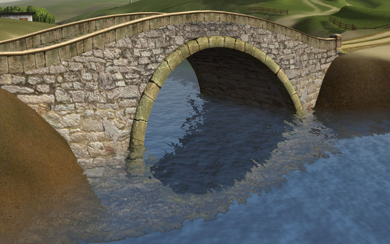

Природные эффекты¶
Содержание
В Blend4Web присутствует ряд эффектов окружающей среды, которые могут быть полезны при создании открытых пространств.
Вода¶
{kind=link}
Базовые настройки¶
- Прозрачность
Рекомендуется включить прозрачность с градиентом (установить значение
Alpha Blendдля параметраTransparency > Type) и настроить значениеAlpha.- Параметры освещения
Параметры освещения материала воды настраиваются как описано в разделе Параметры освещения.
Динамика волн¶
Рябь на водной поверхности симулируется при помощи карт нормалей с анимированными развертками (в количестве от 0 до 4). Для текстур - карт нормалей используется только одно общее изображение, текстуры различаются параметрами Mapping > Size. Меш для воды должен иметь текстурную развертку.
Смачивание поверхностей¶
Осуществляется автоматически. Для включения эффекта на соответствующих материалах необходимо активировать опцию Wettable на панели Rendering Options.
Отражение и эффект Френеля¶
Для материала воды поддерживается как статическое, так и динамическое зеркальное отражение, с эффектом Френеля. См. раздел Зеркальное отражение.
{kind=link}
Сглаживание у береговой линии¶
Эффект заключается в том, что вода ближе к берегу становится прозрачнее.
- Water > Shore Smoothing
Включить сглаживание.
- Water > Absorb Factor
Коэффициент поглощения света водой. Чем он выше, тем прозрачнее вода.Значение этого параметра может находиться в пределах от 0 до 100. Значение по умолчанию - 6.
Градиент цвета¶
Для создания цветного градиента на материале воды должна быть наложена текстура с включенной опцией Export Options > Shore Distance Map, генерируемая с помощью скрипта для запекания параметров береговой линии.
- Shallow Water > Color
Цвет воды на мелководье. По умолчанию используется синий (0.008, 0.222, 0.8) цвет.
- Shallow Water > Factor
Коэффициент примешивания цвета воды на мелководье. Этот параметр может принимать значения от 0 до 2, значение по умолчанию - 1.
- Shore Water > Color
Цвет воды непосредственно у береговой линии. По умолчанию используется тёмно-синий (0.003, 0.19, 0.57) цвет.
- Shore Water > Factor
Коэффициент примешивания цвета воды на береговой линии. Возможные значения - от 0 до 2, значение по умолчанию - 0.5.
Преломление¶
Во вкладке Render в панели Reflections and Refractions выставить опцию Refractions в положение ON или AUTO.
{kind=link}
Пена¶
Активация¶
Для создания пены необходимо добавить в текстурный слот материала воды диффузную текстуру, в каждом из RGB - каналов которой следует расположить черно-белые текстуры пены. Для полученной текстуры необходимо активировать панель Water Foam.
{kind=link}
Настройка текстур¶
- Water Foam > UV Frequency
Частота колебаний анимированной развертки. Значение по умолчанию (1.0, 1.0).
- Water Foam > UV Magnitude
Амплитуда колебаний анимированной развертки. Значение по умолчанию (1.0, 1.0).
Настройка материала¶
- Foam > Factor
Фактор общего влияния пены. Значение по умолчанию 0.5.
Каустика и хроматическая аберрация¶
Для создания каустики на подводных объектах следует включить опцию Caustics. Так же на сцене должен присутствовать источник освещение типа Sun.

- Scale
Размер ячеек процедурной текстуры. Значение по умолчанию 0.25.
- Brightness
Фактор влияния каустики. Значение по умолчанию 0.5.
Подводная среда¶

Настройки видимости (“туман”)¶
- Underwater Fog > Color
Цвет тумана. Значение по умолчанию (0.4, 0.6, 0.7).
- Underwater Fog > Density
Экспоненциальный фактор, влияющий на плотность и расстояние. Значение по умолчанию 0.06.
Применяются также настройки сумеречных лучей.
Примечание
Для корректного отображения водной поверхности необходимо выключить опцию Rendering Options > Backface Culling.
{kind=link}
Объемные волны¶
Активация¶
Для создания объемных волн следует включить опцию Waves.
Примечание
Направление объёмных волн определяется силовым полем типа Wind, присутствующим в сцене.
Если в сцене отсутствует силовое поле типа Wind, объёмные волны будут двигаться только в направлении, заданном по умолчанию. Это направление не может быть изменено.

Настройка¶
- Wave Height
Высота волн. Возможные значения - от 0 до 5. Значение по умолчанию 0.0.
- Wave Length
Длина волн. Возможные значения - от 0.01 до 200. Значение по умолчанию 10.0.
- Noise Dist Scale 0
Размер первого компонента волн, удаленных от берега. Этот параметр может принимать значения от 0 до 1. Значение по умолчанию - 0.05.
- Noise Dist Scale 1
Размер второго компонента волн, удаленных от берега. Возможные значения - от 0 до 1. Значение по умолчанию - 0.03.
- Noise Dist Freq 0
Частота первого компонента волн, удалённых от берега. Этот параметр может принимать значения от 0 до 10. Значение по умолчанию - 1.3.
- Noise Dist Freq 1
Частота второго компонента волн, удаленных от берега. Возможные значения - от 0 до 10, значение по умолчанию - 1.
- Min Dir Shore Fac
Минимальный коэффициент уменьшения высоты прибрежных волн. Диапазон значений - от 0 до 1, значение по умолчанию - 0.4.
- Dir Frequency
Частота накатывания прибрежных волн. Значение этого параметра может изменяться от 0 до 10. Значение по умолчанию - 0.5.
- Noise Dir Scale
Размер шума на прибрежных волнах. Возможные значения - от 0 до 1, значение по умолчанию - 0.05.
- Noise Dir Freq
Частота шума на прибрежных волнах. Возможные значения - от 0 до 1. Значение по умолчанию - 0.07.
- Min Dir Noise Fac
Минимальное значение шума на прибрежных волнах. Этот параметр может принимать значения от 0 до 1. Значение по умолчанию - 0.5.
- Min Dist Fac
Минимальный коэффициент примешивания волн, удаленных от берега. Значение этого параметра может меняться от 0 до 1 и по умолчанию равно 0.2.
- Horizontal Factor
Коэффициент смещения прибрежных волн в направлении к берегу. Этот параметр может принимать значения от 0 до 10 и равен 5 по умолчанию.
Настройки генерируемой поверхности¶
- Generate Mesh
Включить генерируемую поверхность.
- Cascades Number
Задаёт количество каскадов в генерируемой поверхности. Этот параметр может принимать значения от 1 до 20. Значение по умолчанию - 5.
- Subdivisions
Количество подразделений в генерируемой поверхности. Значение по умолчанию - 64. Минимальное возможное значение для этого параметра - 2, а максимальное - 512.
- Detailed Distance
Этот параметр задаёт максимальное расстояние от камеры до края последнего каскада. Значение параметра может меняться от 1 до 5000. Значение по умолчанию - 1000.
Создание текстуры с параметрами береговой линии¶
На панели инструментов (горячая клавиша “T”) во вкладке Blend4Web открыть панель Bake Shore Distance Map. Выставить настройки максимального расстояния до берега Maximum Distance и размера получаемой текстуры Texture Size. Выбрать сначала объект (или несколько объектов) ландшафта, затем объект воды. Нажать кнопку Bake.
В зависимости от размера текстуры и количества вершин в обрабатываемых мешах время выполнения скрипта варьируется от долей секунды до нескольких минут. Убедиться, что в меше воды создана текстура с названием ShoreDistance.
При вызове скрипта в материале воды сохраняются некоторые системные свойства. Поэтому, после его работы обязательно нужно сохранять сцену.
Атмосфера¶
Рассеивание¶
Во вкладке World активировать панель Procedural Sky, предварительно выставив опцию World > Render Sky. Если одновременно с этим используется статическая текстура неба, она будет заменена.
Примечание
Кроме того, процедурная текстура неба может быть использована для имитации рассеянного освещения от окружающей среды, по аналогии со статической текстурой неба. Для этого необходимо выставить опции Procedural Sky > Use as Environment Lighting и Environment Lighting > Sky Texture. Если текстура мира для рассеянного освещения уже существует, она будет заменена.
{kind=link}
Движком поддерживаются следующие настройки:
- Procedural Sky > Sky Color
Базовый цвет неба. Значение по умолчанию (0.087, 0.255, 0.6) (голубой).
- Procedural Sky > Rayleigh Brightness
Яркость рэлеевского рассеяния (на малых частицах). Значение по умолчанию 3.3.
- Procedural Sky > Mie Brightness
Яркость рассеяния Ми (на крупных частицах). Значение по умолчанию 0.1.
- Procedural Sky > Spot Brightness
Яркость пятна солнца. Значение по умолчанию 20.0.
- Procedural Sky > Scatter Strength
Фактор рассеяния света. Значение по умолчанию 0.2.
- Procedural Sky > Rayleigh Strength
Фактор рэлеевского рассеяния. Значение по умолчанию 0.2.
- Procedural Sky > Mie Strength
Фактор рассеяния Ми. Значение по умолчанию 0.006.
- Procedural Sky > Rayleigh Collection Power
Степенной коэффициент рэлеевского рассеяния. Значение по умолчанию 0.35.
- Procedural Sky > Mie Collection Power
Степенной коэффициент рассеяния Ми. Значение по умолчанию 0.5.
- Procedural Sky > Mie Distribution
Распределение рассеяния Ми. Значение по умолчанию 0.4.
Туман¶
Движком поддерживаются стандартные параметры вкладки World > Mist. Помимо этого возможно переопределение цвета тумана.
Настройки тумана описаны в главе Параметры сцены.
При использовании динамического неба цвет тумана определяется цветом неба.
Время суток¶
Для лампы необходимо выставить опцию Dynamic Intensity.
Время суток устанавливается приложениями с использованием соответствующего API. В частности, время суток может устанавливаться в интерфейсе Lighting просмотрщика сцен.
{kind=link}
{kind=link}
Блик (Lens Flare)¶

Включается с помощью опции Lens Flare на вкладке Rendering Options панели Material.

Примечание
Этот эффект работает только в том случае, если в сцене присутствует источник света типа Sun.
Объект для бликов линз¶

Объект используется при визуализации эффекта. По сути, такой объект представляет собой набор плоскостей, каждая из которых содержит один из элементов блика. Нормаль каждой плоскости должна быть направлена в сторону -Y. Каждый элемент блика может двигаться по экрану с поворотом камеры, единственным исключением является центральный элемент (яркая белая “звезда” на изображении выше). Эта плоскость считается центром объекта, и её локальная координата Y должна быть равна 1.
Расположение и пространственная ориентация самого объекта при визуализации не учитываются.
Для корректной работы объекта следует включить опцию Disable Frustum Culling.
Пример использования подобного объекта можно увидеть в нашем демо Island.
Настройки материала¶
Материал объекта для бликов линз должен иметь тип прозрачности Alpha Blend. Значение параметра Alpha должно быть равно нулю.
Нодовые материалы не поддерживаются.
{kind=link}
Ветер¶
- Сила и направление ветра оказывает воздействие на:
частоту колебаний волн воды (в настоящий момент влияет только сила)
Настройка¶
- Направление
Направление задается посредством вращения объекта - силового поля.
- Force Fields > Strength
Сила ветра. Располагается во вкладке
Physics. Значение по умолчанию 1.0.
Анимация травы и крон деревьев¶
Подготовка ресурсов для рендеринга травы описана в разделе Травяной покров.
Активация¶
На объекте травы или дерева активировать панель Wind Bending.
Настройка¶
Интерфейс для настроек появляется после активации панели Wind Bending.
{kind=link}
- Main Bending > Angle
Амплитуда угла “основного” отклонения под действием ветра (в градусах). Значение по умолчанию 10.0.
- Main Bending > Frequency
Частота “основного” отклонения под действием ветра. Значение по умолчанию 0.25.
- Main Bending > Main Stiffness (A)
Текстовое поле для названия слоя вертексного цвета, содержащего информацию о жесткости “основного” отклонения. Может быть оставлено пустым.
- Detail Bending > Amplitude
Амплитуда угла “детализованного” отклонения под действием ветра (в градусах). Значение по умолчанию 0.1.
- Detail Bending > Branch Amplitude
Амплитуда угла отклонения ветвей под действием ветра (в градусах). Значение по умолчанию 0.3.
- Detail Bending > Bending Frequency
Частота колебаний ветвей. Значение по умолчанию 1.0.
- Detail Bending > Leaves Stiffness (R)
Текстовое поле для названия слоя вертексного цвета, содержащего информацию о жесткости листвы. Может быть оставлено пустым.
- Detail Bending > Leaves Phase (G)
Текстовое поле для названия слоя вертексного цвета, содержащего информацию о фазе отклонения листвы. Может быть оставлено пустым.
- Detail Bending > Overall Stiffness (B)
Текстовое поле для названия слоя вертексного цвета, содержащего информацию об общей жесткости листвы. Может быть оставлено пустым.
Слои вертексных цветов с указанными в настройках названиями должны существовать в меше.